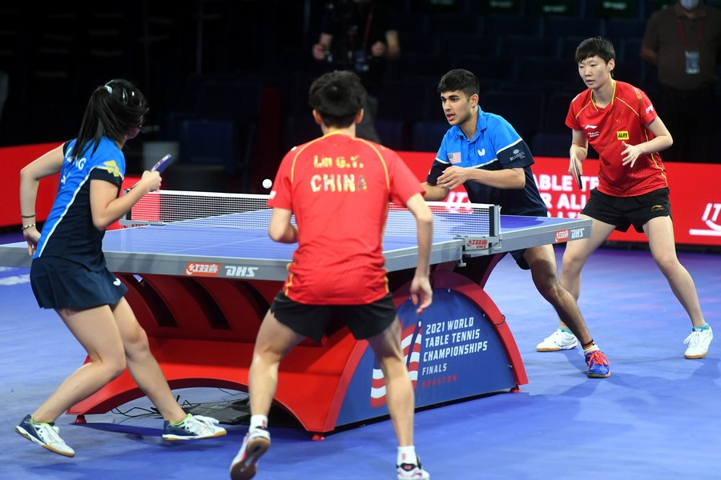
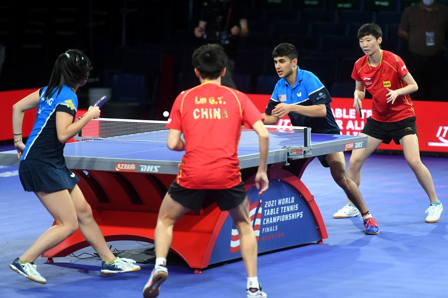

TABLE TENNIS!

Table Tennis Overview
Table tennis, also known as ping-pong or whiff-whaff, is a fast-paced racket sport played on a stationary table divided by a net. Players use small rackets to return a lightweight ball onto the opponent's side, scoring points when the opponent fails to return the ball.
Key Features
quick reflexesand mastery of
spin techniques.Accessible due to its minimal space requirements and affordable equipment.
Popular as both a recreational activity and a competitive sport.
Competitive Status
Table tennis has been an Olympic sport since 1988, featuring men's and women's singles and, since 2008, team events instead of doubles.
Features men's and women's singles, and team events since 2008.

History
Players advance the ball by bouncing it while walking or running (dribbling) or by passing it to a teammate, both of which require considerable skill. On offense, players may use a variety of shots – the layup, the jump shot, or a dunk; on defense, they may steal the ball from a dribbler, intercept passes, or block shots; either offense or defense may collect a rebound, that is, a missed shot that bounces from rim or backboard.t is a violation to lift or drag one's pivot foot without dribbling the ball, to carry it, or to hold the ball with both hands then resume dribbling.The five players on each side fall into five playing positions. The tallest player is usually the center, the second-tallest and strongest is the power forward, a slightly shorter but more agile player is the small forward, and the shortest players or the best ball handlers are the shooting guard and the point guard, who implement the coach's game plan by managing the execution of offensive and defensive plays (player positioning). Informally, players may play three-on-three, two-on-two, and one-on-one.


 

Creation
Rules and Regulations
ITTF Rule Changes Post-2000 Olympics
After the 2000 Sydney Olympics, the International Table Tennis Federation (ITTF) introduced several rule changes to enhance table tennis as a televised spectator sport.
key changes
-
Ball Size Increase:
In October 2000, the ball size was increased from 38 mm (1.50 in) to 40 mm (1.57 in), increasing air resistance and slowing down the game for better visibility on television.
-
Scoring System Update:
In September 2001, the scoring system changed from 21 points to 11 points, and serve rotation was reduced from five points to two, making games more dynamic and engaging.
Equipment
The international rules specify that the game is played with a sphere having a mass of 2.7 grams (0.095 oz) and a diameter of 40 millimetres (1.57 in).[27] The rules say that the ball shall bounce up 24–26 cm (9.4–10.2 in) when dropped from a height of 30.5 cm (12.0 in) onto a standard steel block thereby having a coefficient of restitution of 0.89 to 0.92. As of 2015, balls are now made of a polymer instead of celluloid, colored white or orange, with a matte finish. The choice of ball color is made according to the table color and its surroundings. For example, a white ball is easier to see on a green or blue table than it is on a grey table. Manufacturers often indicate the quality of the ball with a star rating system, usually from one to three, three being the highest.